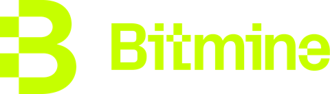
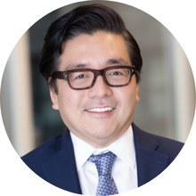
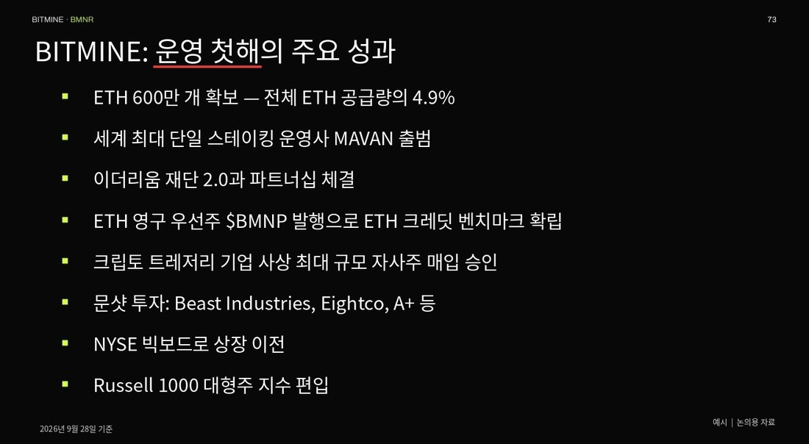
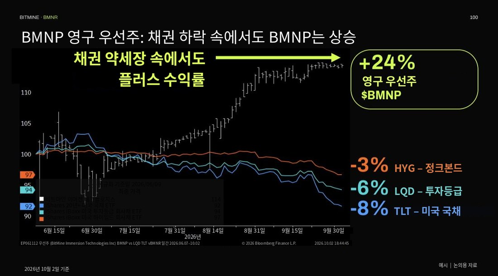
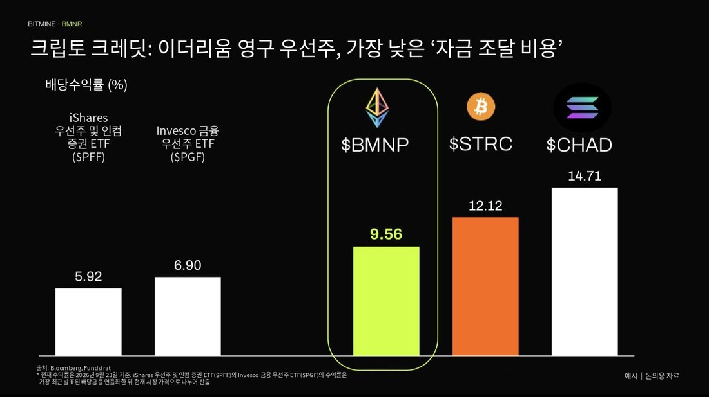
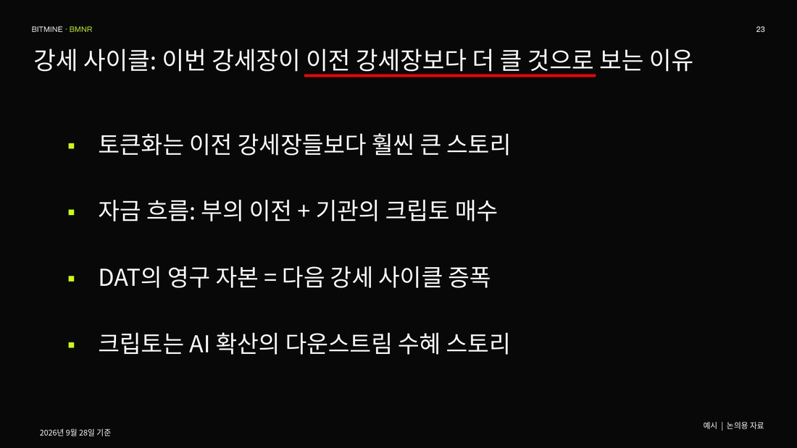
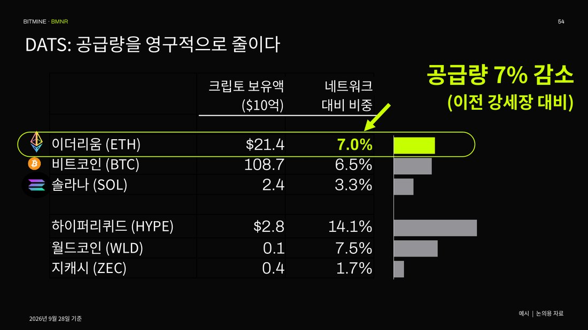
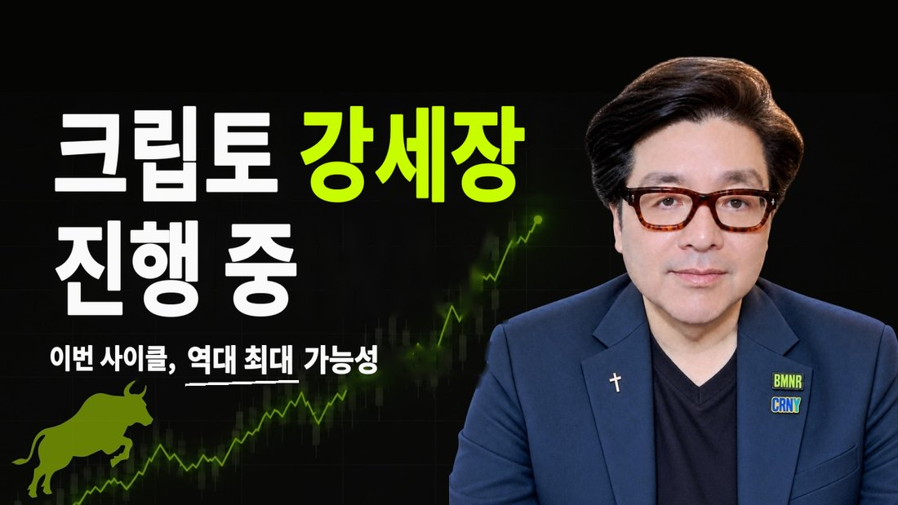

원문: 2026년 10월 12일 Bitmine Immersion Technologies 보도자료.

“당사가 보유한 600만 ETH의 대부분은 크립토 약세장 한가운데서 축적했습니다. 이제 ETH 5% 확보 목표에 근접한 만큼, 다가오는 크립토 강세장을 앞두고 당사는 매력적인 위치에 있다고 판단합니다.”

비트마인의 토머스 ‘톰’ 리 회장은 “당사는 지난 1년간 크립토 겨울(약세장) 속에서도 경쟁력을 한층 강화해 왔습니다. 따라서 앞으로 도래할 것으로 예상되는 크립토 강세장에서 시장 수익률을 웃돌 수 있는 위치에 있다고 봅니다”라고 밝혔습니다.
리 회장은 이어 “당사의 영구 우선주 BMNP는 발행 이후 24% 상승했습니다. 같은 기간 미국 국채(TLT)가 -8% 하락한 것과 비교하면 채권 등 확정금리 자산을 크게 앞지른 성과입니다”라고 말했습니다.

“BMNP는 ETH 크레딧의 벤치마크 수익률을 확립했습니다. BMNP의 수익률 9.56%는 비교 대상인 비트코인 크레딧(STRC)보다 256bp, 솔라나 크레딧(CHAD)보다 515bp 낮습니다. 제 생각에 이는 ETH가 지닌 우수한 수익률과 안정성을 반영한 결과입니다.” 리 회장의 설명입니다.

그는 또 “다음과 같은 요인 덕분에 이번이 사상 최대의 크립토 강세장이 될 가능성이 있다고 봅니다. 그 동력은 ▲토큰화 ▲부의 이전 ▲DATS(디지털 자산 트레저리)의 공급 흡수 ▲AI의 다운스트림 수혜 스토리로서의 크립토입니다”라고 강조했습니다.

리 회장은 “DATS가 보유한 물량은 사실상 크립토 시장에서 영구적으로 빠져나간 공급입니다. 이런 구조는 다가오는 크립토 강세 사이클에 유리하게 작용하며, DATS가 변수가 아니었던 2019~2021년과 비교하면 특히 그렇습니다”라고 덧붙였습니다.

비트마인은 지난 한 주 동안 12,532 ETH를 추가 매입했습니다. 2025년 6월 30일 ETH 트레저리 전략을 시작한 이후 단 한 주도 빠짐없이 매주 ETH를 사들였으며, 회사는 이러한 꾸준한 매입 실적이 전 세계 상장사 가운데 유례가 없다고 설명합니다. 비트마인은 여전히 이더리움 트레저리 1위, 전 세계 트레저리 2위 자리를 지키고 있습니다.
크립토 보유 현황은 2026년 10월 11일 오후 1시 30분(미 동부시간, 한국시간 10월 12일 오전 2시 30분) 기준이며, ETH는 코인베이스 가격 $2,544로 평가했습니다. 스테이킹 매출은 7일 수익률 2.61%를 연율화한 예상치입니다.
보도자료 전문 보기 →
톰 리 회장의 10월 메시지가 공개되었습니다. 원본 이메일의 ‘영상 보기(Watch the video)’ 링크에서 시청하실 수 있습니다.
최신 프레젠테이션 보기 →